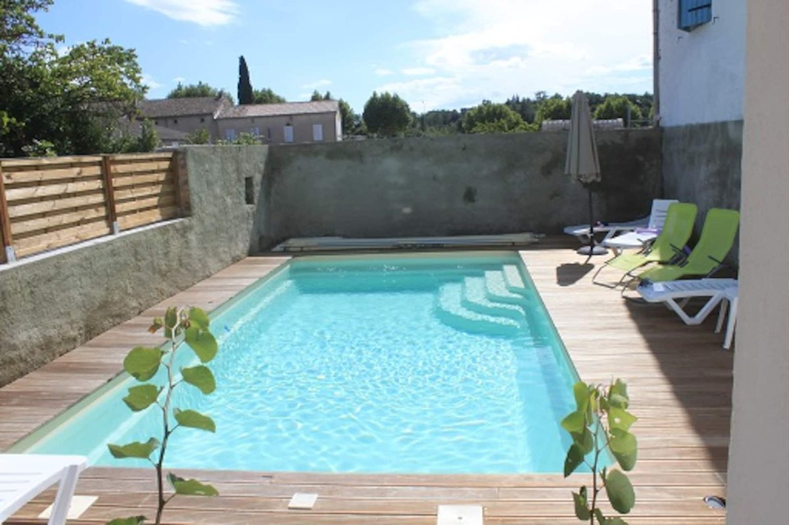
En famille
La piscine sous les yeux. Le matériel bébé est prêté sur demande : chaise haute, lit, baignoire, table à langer.
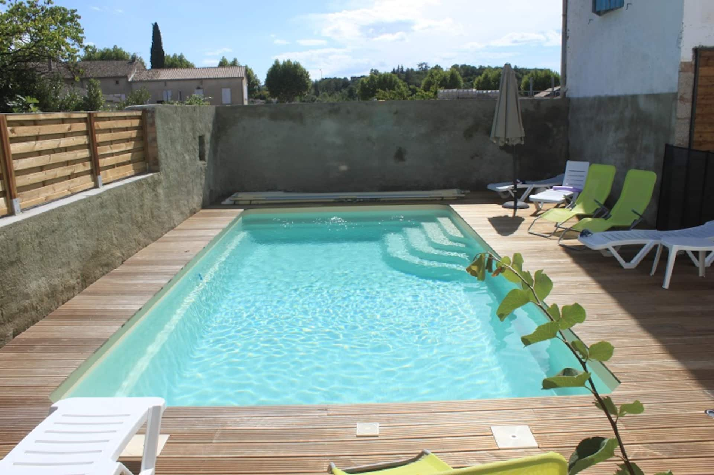
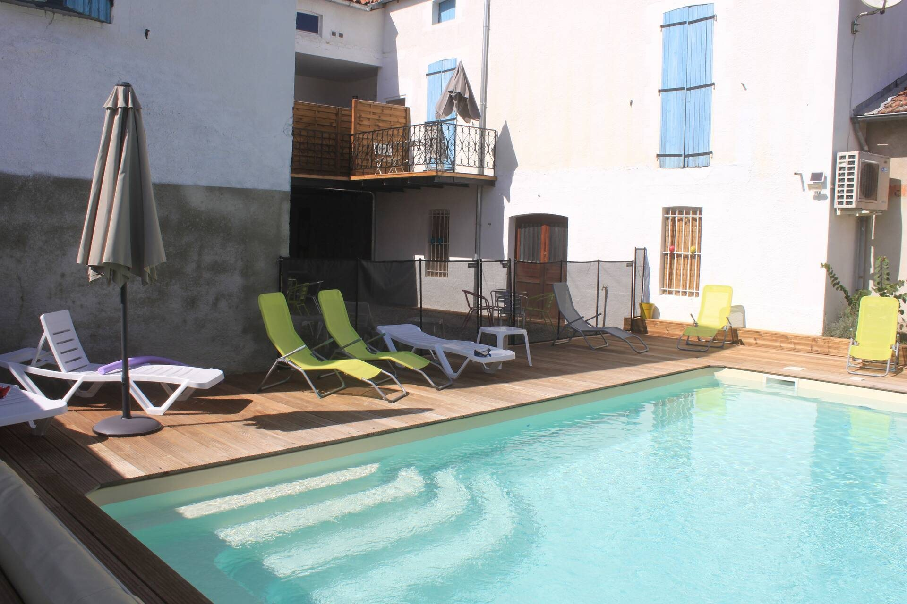
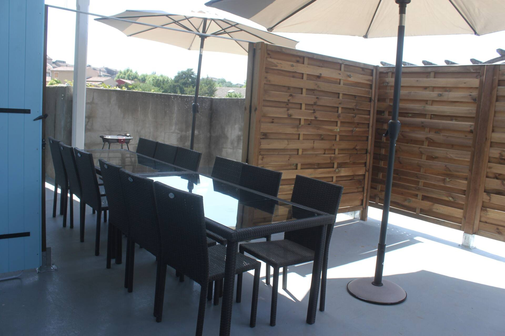
À l’entrée du village de Vallon-Pont-d’Arc, quatre gîtes de 2 à 4 personnes autour d’une cour et de sa piscine : le Pont d’Arc et la grotte Chauvet 2 à 7 minutes.
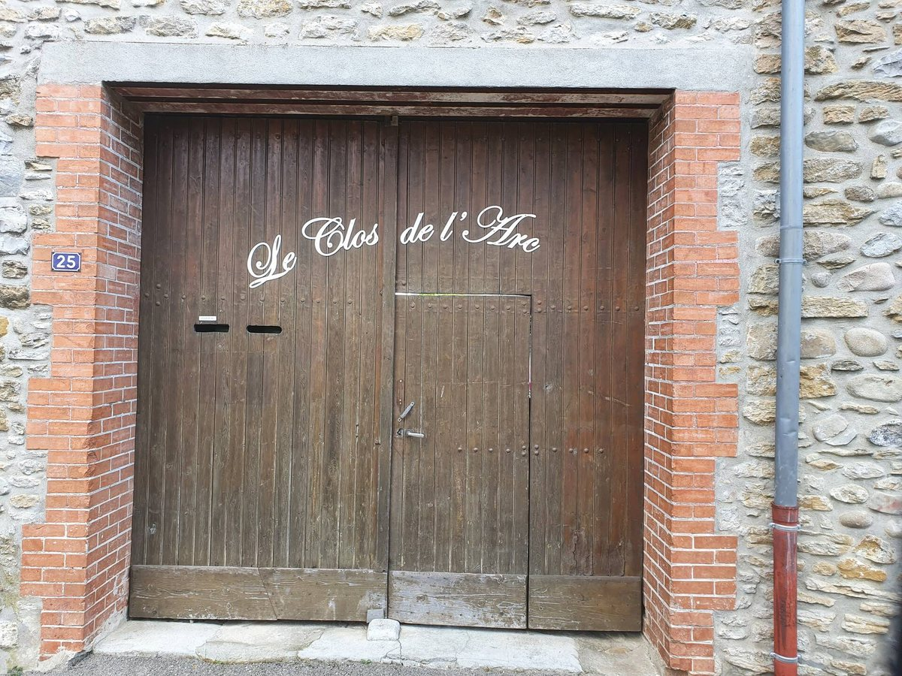
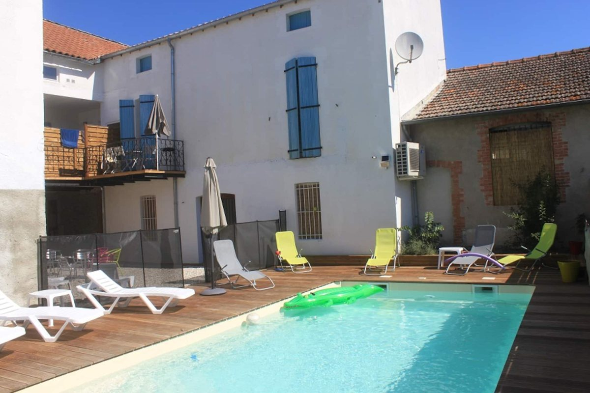
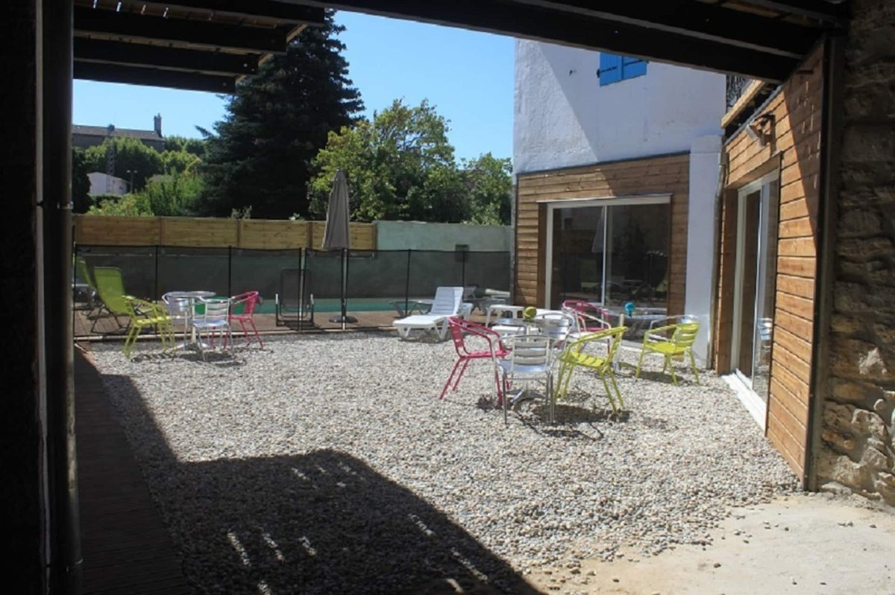
Derrière le grand portail de bois, une bâtisse du début du siècle dernier, rénovée par Anne et Claude pour en faire un lieu de détente et de convivialité.
Quatre gîtes s’y organisent autour d’une cour commune et de sa piscine, chacun avec sa terrasse ou son balcon : entre convivialité et intimité préservée. Le centre piétonnier de Vallon est à deux pas.

La piscine sous les yeux. Le matériel bébé est prêté sur demande : chaise haute, lit, baignoire, table à langer.
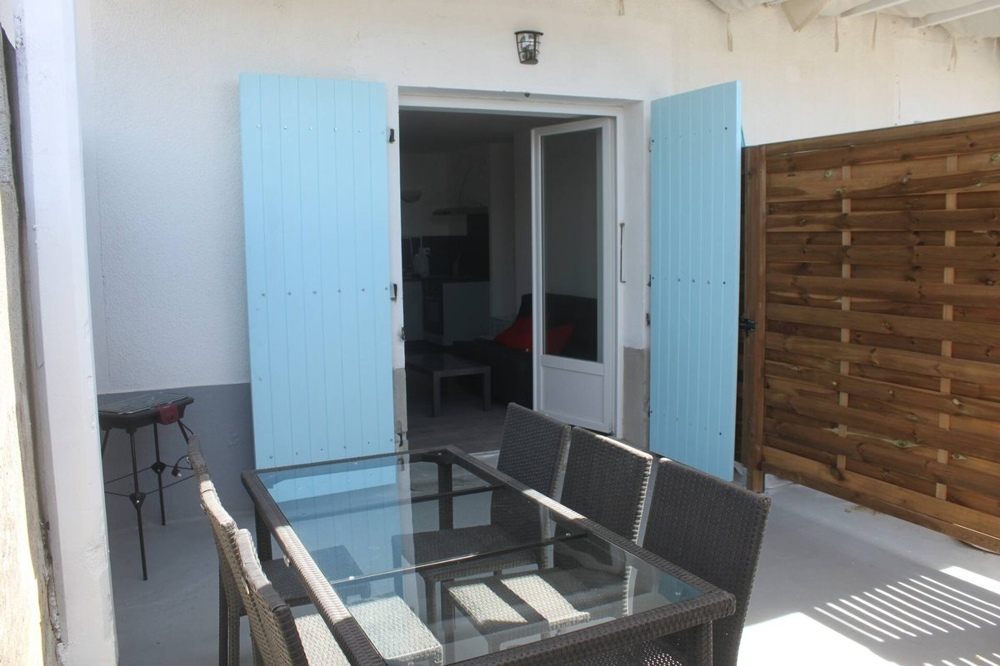
Le Mandarine et le Mistigri communiquent par leur terrasse : 8 personnes, chacun chez soi.
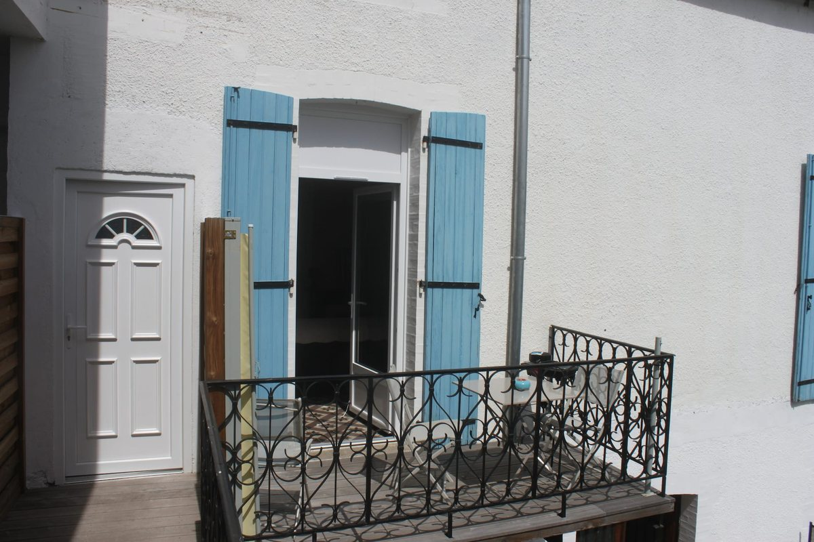
Le Grenade ou le Pistache, pour deux, à quelques pas du village et de ses terrasses.
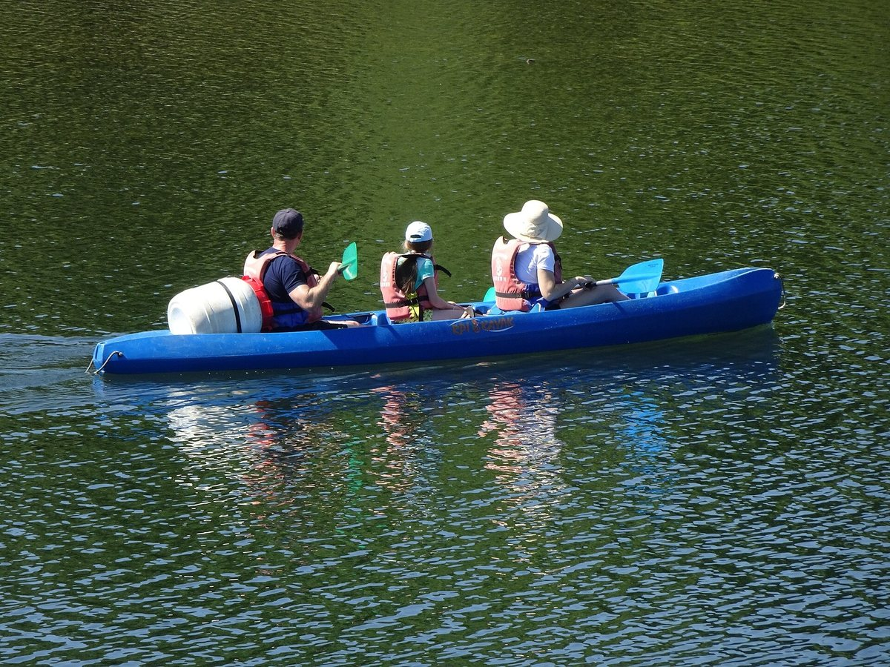
Canoë, escalade, via ferrata, randonnée ou vélo : les gorges commencent au bout de la rue.
| Saison 2026 | Pistache2 à 4 pers. | Mandarine2 à 4 pers. | Mistigri2 à 4 pers. | Grenade2 à 3 pers. |
|---|---|---|---|---|
| Hors saisondu 1er janvier au 27 mars | 485 € | 485 € | 510 € | 355 € |
| Basse saisondu 28 mars au 24 avril et du 27 septembre au 31 décembre | 560 € | 560 € | 590 € | 410 € |
| Mi-saisondu 25 avril au 26 juin et du 5 au 26 septembre | 625 € | 625 € | 650 € | 460 € |
| Saisondu 27 juin au 10 juillet et du 29 août au 4 septembre | 775 € | 775 € | 825 € | 675 € |
| Haute saisondu 11 juillet au 28 août | 950 € | 950 € | 1 050 € | 750 € |
| Saison 2026 | Pistache2 à 4 pers. | Mandarine2 à 4 pers. | Mistigri2 à 4 pers. | Grenade2 à 3 pers. |
|---|---|---|---|---|
| Hors saison | 85 € | 85 € | 95 € | 65 € |
| Basse saison | 95 € | 95 € | 110 € | 75 € |
| Mi-saison | 105 € | 105 € | 120 € | 85 € |
Choisissez vos dates sur le planning : le prix exact de votre séjour s’affiche aussitôt, avec la taxe de séjour (1,43 € par nuit et par adulte) et les options choisies (draps, linge de toilette, ménage). Les dates déjà prises sont barrées.
Anne et Claude accueillent les voyageurs au Clos de l’Arc et leur répondent eux-mêmes. Sur Airbnb, les quatre gîtes réunissent 328 avis, de 4,63 à 4,89 sur 5. Le Mandarine a 5 sur 5 pour l’arrivée.
On parle anglais et espagnol au Clos : english spoken, se habla español.
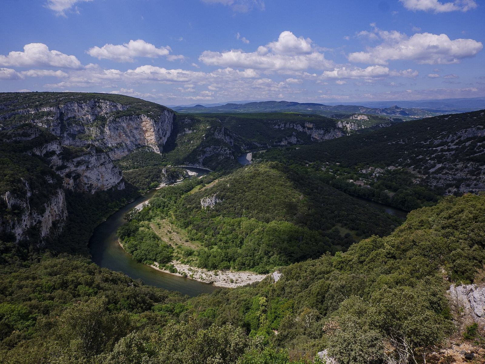
Choisissez vos dates et votre gîte : Anne et Claude vous répondent eux-mêmes.
Réservez en ligne avec le planning, ou posez votre question : la réponse arrive vite.
Le Pistache, le Mandarine et le Mistigri reçoivent chacun de 2 à 4 personnes, le Grenade de 2 à 3 personnes. Le Mandarine et le Mistigri communiquent par leur terrasse : ensemble, ils accueillent 8 personnes. En basse et mi-saison, le Mistigri peut recevoir jusqu’à 6 personnes.
En ligne, avec le bouton « Réserver » : vous choisissez vos dates sur le planning puis votre gîte : le prix du séjour s’affiche aussitôt. Vous pouvez aussi appeler Anne et Claude au 06 95 83 63 00. Un acompte de 30 % du séjour est demandé à la réservation.
De septembre à juin, les gîtes se louent à la nuitée, avec 2 nuits minimum. Du 27 juin au 4 septembre, ils se louent à la semaine.
Non, mais il se loue : draps à 15 € par lit double et 12 € par lit simple, kit de linge de toilette à 8 €, torchon à 1,50 €. Les lits peuvent être faits pour votre arrivée (3 € par lit).
Le ménage de fin de séjour est en option : 50 € pour le Grenade, 60 € pour le Mandarine et le Pistache, 70 € pour le Mistigri.
Elle est partagée entre les quatre gîtes, dans la cour commune. Chaque gîte a sa terrasse ou son balcon, pour garder un coin à soi. Les enfants se baignent sous la surveillance de leurs parents.
La caution est de 500 € par gîte. La taxe de séjour est de 1,43 € par nuit et par personne de plus de 18 ans.
Chaise haute, lit, baignoire et table à langer vous sont prêtés : pensez simplement à les demander en réservant.